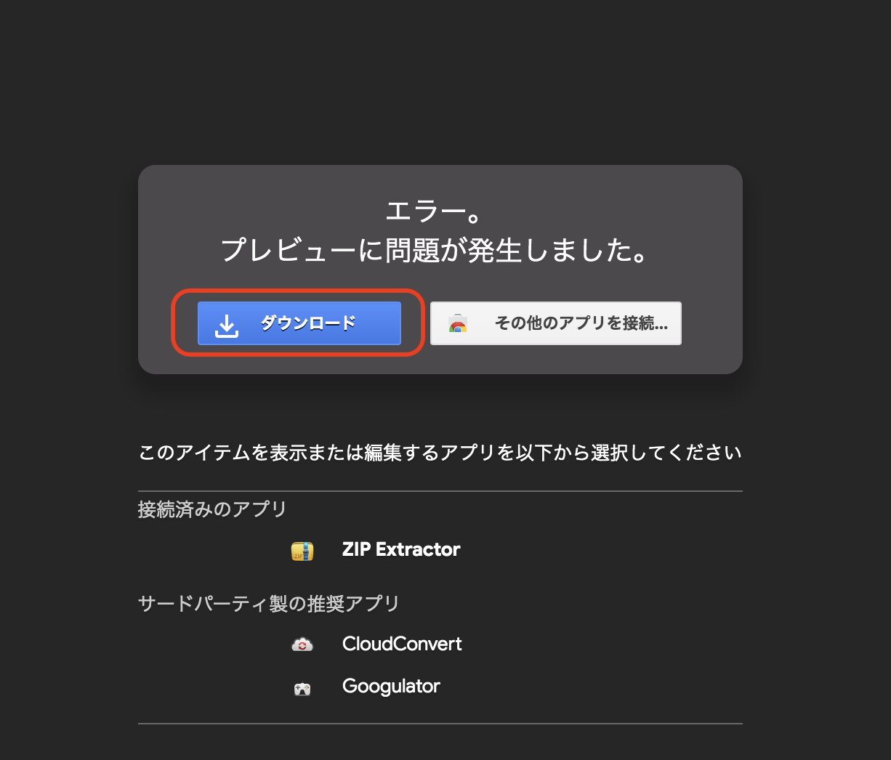
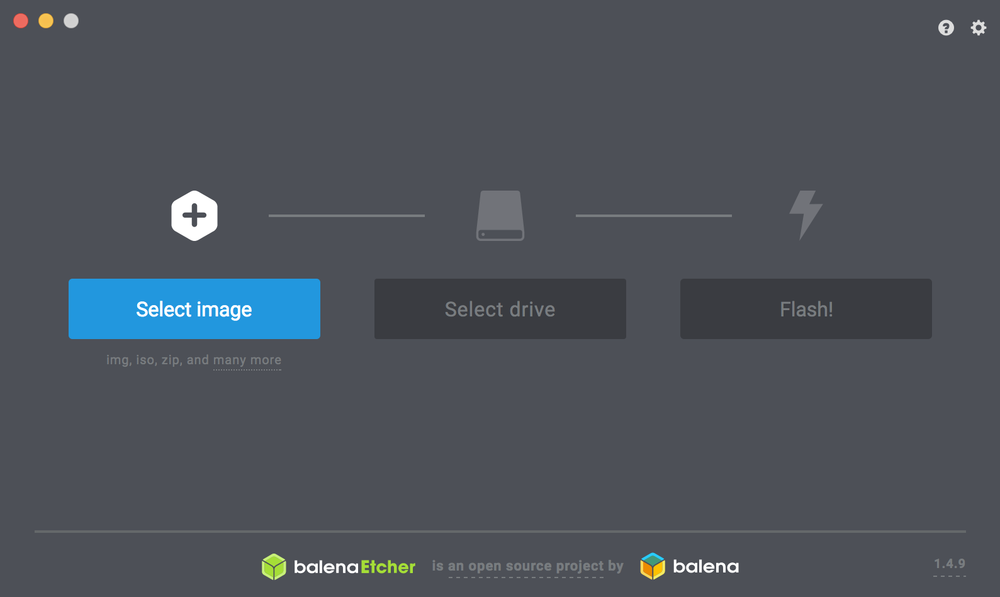
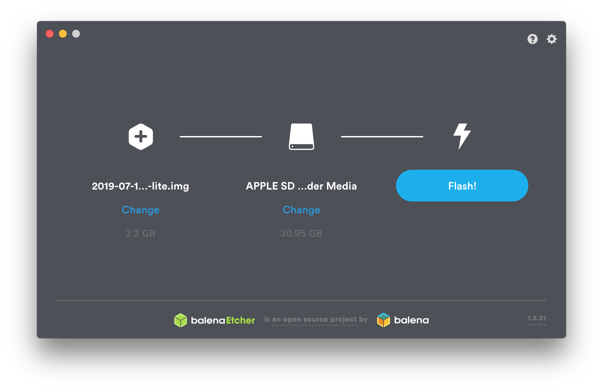
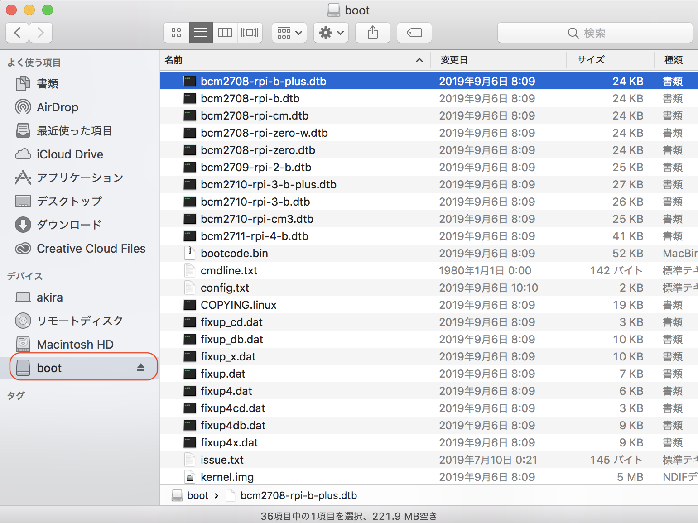

DonkeyCarのSDカード作成
DonkeyCarのRaspberry Pi用イメージ
| 作業デバイス | |
|---|---|
donkeycar-pi-2021-11-25.zip をダウンロードします。


zipファイルをダウンロードしたら、解凍し、imgをSDカードに焼き込みます。
| イメージ | ベースOS | DonkeyCar |
|---|---|---|
| donkeycar-pi-2021-11-25.img | Raspberry Pi OS Lite 2021-03-25 | v3.1.5 |
| donkeycar-pi-2021_03_25.img | Raspberry Pi OS Lite 2021-03-25 | v3.1.5 |
| donkeycar-pi-2020_11_30.img | Raspberry Pi OS Lite 2020-08-20 | v3.1.5 |
| donkeycar-pi-2020_08_25.img | Raspberry Pi OS Lite 2020-08-20 | v3.1.5 |
donkeycar-pi-2021_11_25.imgはdonkeycar-pi-2021_03_25.imgをベースに、扱いやすいように最大速度を0.5に変更したものになります。(myconfig.pyのJOYSTICK_MAX_THROTTLEの値)
donkeycar-pi-2020_11_30.imgはdonkeycar-pi-2020_08_25.imgに不足していたzipコマンドをインストールしたものになります。
donkeycar-pi-2020_08_25.imgはRaspberry Pi3B+とRaspberry Pi3A+、FaBo DonkeyBoard OLEDあり/なしで動作確認しています。
SDカードイメージの焼き込み
| 作業デバイス | |
|---|---|
焼き込みには、Etcherを使い焼き込みます。 Etcher
ダウンロードしたRaspberry Piのイメージをmicro SDカードに焼き込みます。
注意点
必ずデータの入っていないmicro SDカードを使用してください。

ダウンロードしたイメージとmicro SDカードを選択します。
Flashボタンを押すことで焼き込みが開始し、完了すれば焼き込み終了です。

OSイメージをSDカードに焼き込み終わったあとに、SDカードを抜いて、再度PCに挿し直すと、PCでSDカードが認識されます。OSXの場合、SDカードは、Bootというデバイスで認識されます。

次にネットワークの設定をおこないます。